SLAVES LABOR: THE MOSCOW - VOLGA AND THE VOLGA - DON CANALS
I'd like to call you all by name
But the list was removed
And there is nowhere else to look.
Anna Akhmatova, Requiem, 1935-1940The Volga River was the single most important inland waterway in the Soviet Union, accounting for over half the river traffic of the country. Navigation on the Volga system was enhanced by seven major dams constructed in the Soviet period. The Volga-Don Canal in the south provided a sea outlet through the Black Sea, and the Volga-Baltic Waterway in the north, and the Volga-Baltic Waterway in the north provided a sea outlet through the Baltic Sea.
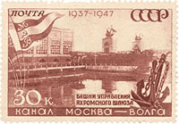
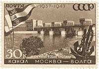
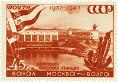
Sept. 7, 1947. Moscow-Volga canal. Scott 1147 - 1149
In the 1930s, two major canals were constructed: one connecting the Baltic and White seas, 227 kilometers long, with nineteen locks; the other connecting Moscow to the Volga River, 128 kilometers long. Both were built using prisoners, the first at a cost of about 225,000 human lives. The Moscow-Volga Canal, built between 1932 and 1937, flows 80 miles from the Volga to the Moskva River at Moscow. By 1940 about 108,900 kilometers of river and 4,200 kilometers of man-made waterways were in operation, which allowed movement of 73.9 million tons originated of freight.
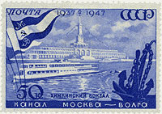
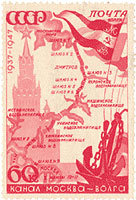
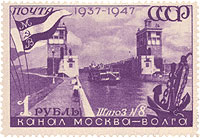
Sept. 7, 1947. Moscow-Volga canal. Scott 1150 - 1152Gulag prisoners constructed the White Sea-Baltic Canal, the Moscow-Volga Canal, the Baikal-Amur main railroad line, numerous hydroelectric stations, and strategic roads and industrial enterprises in remote regions. GULAG -- "Glavnoe Upravlenie Ispravitelno-trudovykh Lagerej", or The Chief Directorate of Corrective Labor Camps.
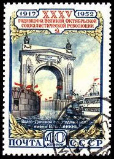
Nov. 6, 1952. M.S. Ship Joseph Stalin at entrance to Volga - Don canal. Scott 1643.
In the 1950s, construction of the 101-kilometer canal connecting the Volga and Don rivers, also built using prisoners, brought all the major inland river ports within the reach of the Black, Baltic, Caspian, Azov, and White seas. Source
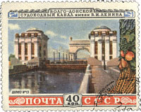
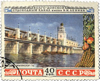
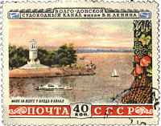
Aug. 29, 1953. Volga - Don canal. Scott 1666 - 1668
More than 100,000 "political" prisoners were employed in the project at any one time. It was this canal that gave Soviet convict workers their slang moniker, zeki or zeks, after Zaklyuchennyie Kanalstroya, prisoners of the canal-building directorate.
Moskow-Volga was the centerpiece of the Soviets' vile bid to represent forced labor as aerobic outdoor therapy. If truth be told, the "enthusiasts" north of Moskow were slaves, ill fed and put out in sod huts and dugouts. They scraped the first two years without machinery, up to their knees in ground water. Pressure for completion worsened their pain.
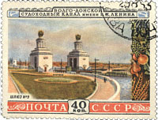
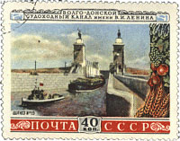
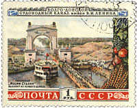
Aug. 29, 1953. Volgs - Don canal. Scott 1669 - 1671
The amnesty that freed 55,000 zeks in July 1937 - mostly to languish in villages along the water edge - came too late for those who had succumbed to undernourishment and exposure, exhaustion, and, after mechanization, explosions and unsafe machinery. Unmarked burial grounds for "tens of thousands" were put in villages along the canal.
Yes, the stamps issued by the Soviet post were attractive, colorful and well designed but they were hiding a horrible reality, that of the usage of slave labor in the middle of the 20th century. As a personal choice, I will never collect them.
To finish, a popular joke in the Soviet Union. In our country there are three types of citizens: those who have been in prison, those who are in prison and those who will be in prison.
Link: Romania Danube - Black Sea canal
Created: 10/06/2011. Revised: 1/11/2024
Copyright © 2013- 2024 by Victor Manta, Switzerland/USA.
All rights reserved worldwide.